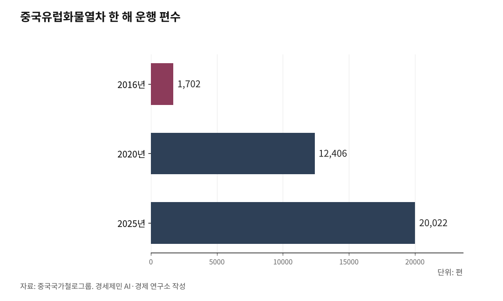
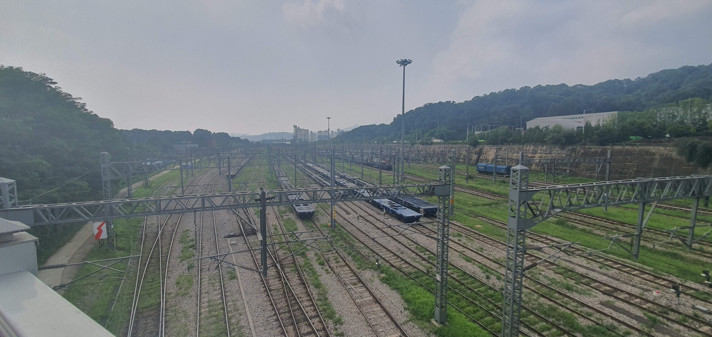

[환황해 철도망①] 6년 만에 달린 평양~베이징 열차, 유럽행 한국 화물은 최단 36일 뱃길
12년 닫힌 신압록강대교, 10월 15일 개통 예고
중국유럽화물열차 누적 13만편, 한국 철도화물 분담률 1.1%
대륙철도의 본질은 화물, 시리즈가 붙잡을 다섯 논지
평양과 베이징을 잇는 국제열차가 2026년 3월 6년 만에 다시 달렸다. 12년 닫혀 있던 신압록강대교는 10월 15일 문을 연다. 중국에서 유럽까지 가는 화물열차는 누적 13만편을 넘겼다. 그사이 유럽으로 가는 한국 화물은 가장 빠른 배로도 36일을 돈다.
1. 평양~베이징 열차, 6년 만의 재개
2026년 3월 12일 오후 5시 26분 베이징역에서 평양행 국제열차가 떠났다. 2020년 1월 코로나로 북한이 국경을 닫으며 끊긴 지 6년 만이다. 열차는 월·수·목·토 주 4회 다닌다. 같은 날 단둥과 평양을 잇는 열차도 매일 운행을 다시 시작했다.
3월 30일에는 중국국제항공이 북한행 직항을 6년 만에 다시 띄웠다. 열차가 건넌 다리는 1943년 일제가 군대와 물자를 실어 나르려고 놓은 압록강철교, 지금 이름으로 중조우의교다. 단둥과 신의주 사이 철길은 아직 이 다리 하나뿐이다.
사람을 나르는 일에서 철도는 비행기를 이기기 어렵다. 인천에서 베이징까지 비행기로 2시간25분이면 간다. 베이징에서 평양까지 열차는 꼬박 하루를 달린다. 철도가 비행기와 값을 겨룰 자리는 사람이 아니라 짐이다. 이 시리즈의 물음은 거기서 시작한다.

2. 12년 닫힌 신압록강대교의 개통
신압록강대교는 랴오닝성 단둥과 평안북도 신의주를 잇는 왕복 4차로 다리다. 길이는 3026m다. 2010년 12월 첫 삽을 떠 2014년 10월 다 지었다. 그러나 북한 쪽 연결도로와 통관시설이 갖춰지지 않았다. 대북 제재와 코로나 국경 봉쇄까지 겹쳐 12년 동안 차 한 대 건너지 못했다.
그 다리가 10월 15일 정식으로 열린다. 두 나라가 합의해 이날 공동 개통식을 연다고 신화통신이 14일 보도했다. 1월에는 단둥시 당국자가 연내 개통을 목표로 내걸었다. 서울평양뉴스는 5월 위성사진으로 북한 쪽 세관 완공을 2026년 말~2027년으로 내다봤다. 개통은 그 전망보다 이르다.
그 사이 시진핑 중국 국가주석이 6월 8일 평양 순안공항에 내렸다. 이틀 일정의 국빈 방문이자 7년 만의 방북이었다. 시 주석은 통상구 전면 재개통과 항공편·여객열차 운행 재개를 계기로 사람의 왕래를 넓히자고 했다. 서울평양뉴스는 이번 개통을 두 정상이 합의한 통상구 전면 개방의 후속 조치로 풀이했다.
문이 열리기 전부터 짐이 먼저 줄을 섰다. 자유아시아방송(RFA) 취재로는 단둥 세관 앞 공터에 9월 20일부터 화물차 100여 대가 모여 있다. 10월 13일에는 비어 있던 세관 주차장에 차가 20대 넘게 들어섰다. 현지 소식통은 세관 직원들이 10월 8일부터 정상 근무에 들어갔다고 RFA에 말했다.
다리를 놓는 데 4년이 채 안 걸렸고 여는 데는 12년이 걸렸다. 가장 큰 걸림돌은 북한 쪽 시설이 늦어진 일이었다. 거기에 제재와 국경 봉쇄, 두 나라 관계가 겹쳤다. 다시 여는 계기로는 정상회담이 꼽힌다. 이 시리즈가 대륙철도를 정권의 시간표와 떼어 보자고 하는 까닭이 여기 있다.
3. 13만편 중국유럽화물열차, 한국 철도화물은 1.1%
중국과 유럽을 잇는 화물열차(中欧班列)는 2011년 3월 충칭에서 처음 떠났다. 2026년 5월 누적 13만편을 넘겼다. 중국국가철로그룹 발표를 보면 실어 나른 화물은 값으로 5200억달러가 넘는다. 유럽 26개국 235개 도시에 닿는다.
한 해 운행은 2016년 1702편에서 2025년 2만22편으로 늘었다. 코로나로 바닷길과 하늘길이 흔들린 2020년에는 1만2406편으로 한 해 만에 50% 뛰었다. 배와 비행기가 흔들릴 때 철길이 그 짐을 받아 냈다. 대륙철도는 위기 때 꺼내 쓰는 보험 노릇도 한다.
이 가운데 한국에 가장 가까운 길이 동부 통로다. 러시아와 맞닿은 만저우리·쑤이펀허·퉁장 통상구를 지난다. 이 통로만 2026년 6월 누적 4만편을 넘었다. 인천대 동북아물류대학원 왕관·안승범 연구진도 이 길을 1순위로 꼽았다.
연구진은 2021년 한국항만경제학회지에 인천에서 독일 함부르크까지 세 길을 견준 논문을 실었다. 인천~다롄~만저우리가 1순위였다. 인천~르자오~얼롄하오터가 2순위, 인천~롄윈강~아라산커우가 3순위였다. 전문가 20명은 비용과 시간을 가장 무겁게 따졌다.
한국 화물은 그 길을 거의 쓰지 못한다. 국내 철도 화물 수송분담률은 톤 기준 1.1%(2023년)다. 화물열차를 굴리는 코레일의 부채는 2025년 말 22조1533억원이고 부채비율은 280%다. 대륙으로 짐을 보낼 국내 철도의 바탕이 그만큼 얇다.
유럽으로 가는 한국 화물은 배를 탄다. MSC가 4월 개편한 북유럽 항로에서 부산~로테르담은 36일, 부산~영국 사우샘프턴은 47일이 걸린다. 홍해 사태 뒤 희망봉으로 돌아간 일정이다. 시인텔리전스 집계로 9월에는 아시아~유럽 컨테이너선의 27%가 다시 수에즈운하를 지났다.

4. 시리즈가 붙잡을 다섯 논지
이 시리즈는 환황해(環黃海) 철도망을 다섯 갈래로 짚는다. 첫째, 대륙철도의 본질은 여객이 아니라 화물이다. 철도가 값을 매길 자리는 배보다 빠르고 비행기보다 싼 짐이다. 둘째, 대륙으로 나가기 전에 집 안부터 본다. 남한 철도망과 항만을 잇는 해철(海鐵) 연계가 먼저다.
셋째, 환황해 철도망의 정점은 인천이다. 서해안 철길과 항만과 대륙 관문이 인천에서 만난다. 넷째, 대륙철도는 통일 행사가 아니라 산업 공급망이다. 제조업 원료와 완제품이 오갈 길로 놓고 따진다.
다섯째, 대륙철도를 정치 일정과 떼어 놓는다. 신압록강대교는 다 지은 뒤에도 제재와 봉쇄, 두 나라 관계에 묶여 12년을 닫혀 있었다. 대륙으로 가는 길을 정권의 시간표에 맡기면 같은 일이 되풀이된다. 정권이 바뀌어도 남는 물류 구조를 잣대로 삼는다.
평양~베이징 열차는 사람을 싣고 다시 달린다. 15일 신압록강대교가 열리면 단둥과 신의주 사이 길은 둘로 는다. 그 길에 실릴 짐이 어디서 와서 어디로 갈지는 아직 정해지지 않았다. 한국 화물이 그 짐 가운데 하나가 될 수 있을지가 지켜볼 대목이다.
※ 이 기사는 AI 프로그램 클로드를 활용해 작성했습니다.
참고문헌
공식 발표자료와 공공기록
· 중국국가철로그룹(中国铁路 위챗 공중계정), "中欧班列开行突破13万列", 2026.5.9.(중국일보망 전재), https://cn.chinadaily.com.cn/a/202605/09/WS69ff3363a310942cc49ab7c7.html
· 何晓·魏玉坤, 신화통신(국가발전개혁위원회 발표), "中欧班列累计开行量突破13万列", 2026.7.28., https://www.news.cn/20260728/eae035723d9b4c17b62b0c7667ad30fe/c.html
· 신화망, "中欧班列'东通道'累计通行量突破4万列", 2026.6.16., https://www.news.cn/photo/20260616/9d7b0618a4bf437ea005ffb4667d947f/c.html
· 중화인민공화국 외교부, "习近平同金正恩举行会谈", 2026.6.8., https://www.mfa.gov.cn/web/zyxw/202606/t20260608_11939783.shtml
· 국토교통부, "수송량 및 수송분담률", e-나라지표, 2026.4.1. 갱신, https://www.index.go.kr/unity/potal/main/EachDtlPageDetail.do?idx_cd=1245
연구보고서와 논문
· 왕관·안승범, "한-유럽 복합운송 경로선택에 관한 연구: 중국-유럽 화물열차를 중심으로(Multimodal Route Selection from Korea to Europe Using Fuzzy AHP-TOPSIS Approaches)", 한국항만경제학회지, 제37집 제4호, 2021.12., 13-31쪽, https://koreascience.or.kr/article/JAKO202117163750803.pdf
언론 보도
· 伍鲲鹏·李晓婷·赵佳乐, "13年'10万+' 中欧班列驶向开放共赢'新里程'", 新华网(经济参考报), 2024.12.4., https://www.news.cn/fortune/20241204/671c25f86e0941d999e95c94ec3390b5/c.html
· 박정규·임철휘, "북·중 승객 태우고 출발…평양행 전용 2개차량은 긴장(종합)", 뉴시스, 2026.3.12., https://www.newsis.com/view/NISX20260312_0003546368
· 배근미, "북중 여객열차, 6년만에 운행 재개…'압록강 철교 양방향 통과 확인'", 이투데이, 2026.3.12., https://www.etoday.co.kr/news/view/2564880
· Sertac Aktan, "China resumes flights to North Korea after a six-year pause", Euronews, 2026.3.30., https://www.euronews.com/2026/03/30/china-resumes-flights-to-north-korea-after-a-six-year-pause
· 장이주, "'中 단둥시 당국자, 신압록강대교 연내 개통 목표 밝혀'", SPN 서울평양뉴스, 2026.1.23., https://www.spnews.co.kr/news/articleView.html?idxno=103762
· 정성학, "[NK 위성포커스] 12년째 멈춘 신압록강대교… 북한 세관 공사 60~70% 진척", SPN 서울평양뉴스, 2026.5.7., https://www.spnews.co.kr/news/articleView.html?idxno=107005
· 홍승욱, "시진핑 평양 도착...7년 만의 방북 일정 시작", 자유아시아방송(RFA), 2026.6.8., https://www.rfa.org/korean/in-focus/2026/06/08/xi-jinping-north-korea-summit/
· 노정민·김지은, "중국 신화통신 '북중 신압록강대교, 15일 공식 개통'", 자유아시아방송(RFA), 2026.10.13., https://www.rfa.org/korean/in-focus/2026/10/14/new-yalu-river-bridge-to-open-between-china-north-korea/
· 박세림, "中신화통신 '북중 신압록강대교 15일 개통'", SPN 서울평양뉴스, 2026.10.14., https://www.spnews.co.kr/news/articleView.html?idxno=111609
· 최성훈, "'부산-로테르담 36일' 스위스 MSC, 북유럽항로 개편", 코리아쉬핑가제트, 2026.4.24., https://www.ksg.co.kr/news/main_newsView.jsp?pNum=147021
· 최성훈, "컨선사들 수에즈운하 복귀 본격화…유럽항로 운임 하락일로", 코리아쉬핑가제트, 2026.10.14., https://www.ksg.co.kr/news/main_newsView.jsp?pNum=148221
· 조민규, "코레일, 철도 운송서 3621억 적자…수탁 흑자도 못 메워", 토요경제, 2026.7.20., https://sateconomy.co.kr/news/view/1065587667477351
· Trip.com(VariFlight 자료), "KE851 Korean Air Flight Status Live", 2026.10.14. 확인, https://us.trip.com/flights/status-ke851/
사진 출처
· [사진1] N509FZ, "HXD3D 8032 with K27@BJI (20260312172753).jpg", 위키미디어 공용, CC BY-SA 4.0, https://commons.wikimedia.org/wiki/File:HXD3D_8032_with_K27@BJI_(20260312172753).jpg
· [사진2] TurnOnTheNight, "Dandong Land Port 20260330123334.jpg", 위키미디어 공용, CC BY-SA 4.0, https://commons.wikimedia.org/wiki/File:Dandong_Land_Port_20260330123334.jpg
· [사진3] Rob Dammers, "Oberhausen West DR 243 179 China trein (51955842937).jpg", 위키미디어 공용, CC BY 2.0, https://commons.wikimedia.org/wiki/File:Oberhausen_West_DR_243_179_China_trein_(51955842937).jpg
· [사진4] Aspere, "230814 오봉역 구내 1.jpg", 위키미디어 공용, CC0, https://commons.wikimedia.org/wiki/File:230814_오봉역_구내_1.jpg
#환황해철도 #대륙철도 #평양베이징열차 #신압록강대교 #중국유럽화물열차 #동부통로 #시진핑방북 #철도화물 #해철연계 #인천관문